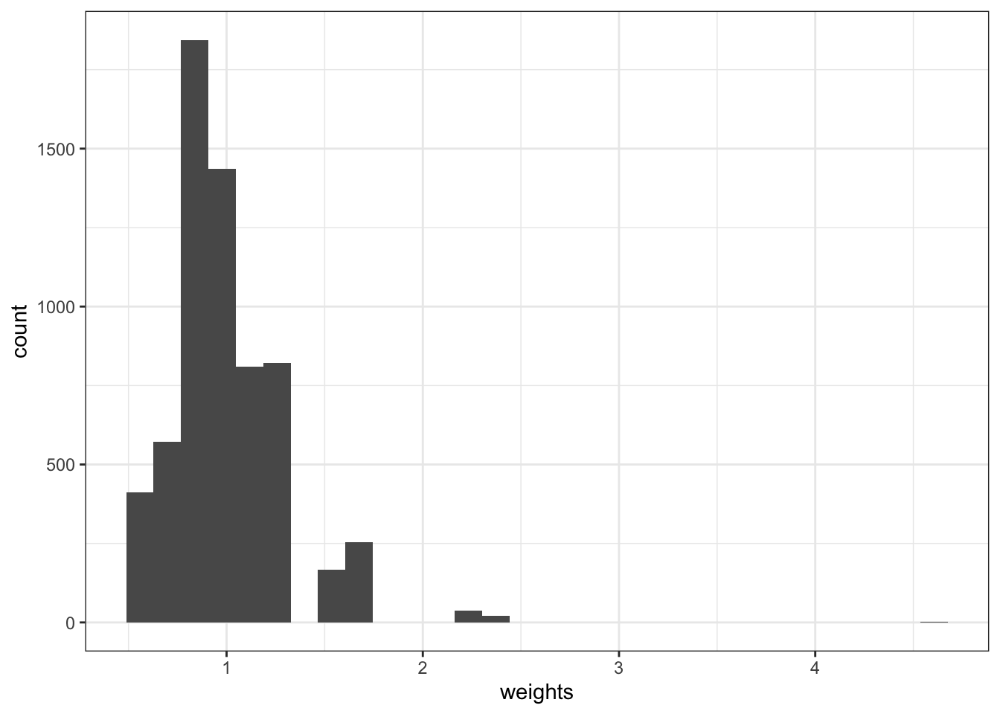

| 平均価格 | CBD | 取引年 | 事例割合 | ターゲット | Balancing Weight |
|---|---|---|---|---|---|
| 37.748 | 0 | 2021 | 0.784 | 0.782 | 0.997 |
| 60.474 | 1 | 2021 | 0.216 | 0.218 | 1.010 |
| 39.150 | 0 | 2022 | 0.779 | 0.782 | 1.003 |
| 64.814 | 1 | 2022 | 0.221 | 0.218 | 0.989 |
3 Balancing Weight
\(D\)間での\(X\)の分布をバランスを達成する実用的な手法は、数多く提案されています (Chattopadhyay, Hase, and Zubizarreta 2020; Bruns-Smith et al. 2023)。 このような手法を整理し、活用していくためには、Balancing weight という概念を導入することが有益です。
Balancing weightは、前章で導入したWeightの一種であり、\(D\)間での\(X\)の分布の乖離を調整するために用いられます。
3.1 Balancing Weightの定義
Balancing Weight
Balancing weight \(\omega(x,d)\)は、\(D\)間での\(X\)の分布の乖離を調整するために導入され、以下のように定義する。 \[D=1における事例割合\times \omega(x,1)\] \[= D=0における事例割合\times \omega(x,0)\] \[=ターゲットとなる割合\]
定義式を変形すると \[\omega(x,d)=\frac{ターゲット}{D=dにおける事例割合}\]
- ターゲットに比べて過大な事例割合が過大なグループに対しては小さい、過小なグループに対しては大きなWeightを付与する。
ターゲットは、原理的には研究者が指定する必要があります。 代表的なものは、データ全体における\(X\)の分布です1。
先のデータに適用すると、以下のようなBalancing Weightが計算されます。
2022年と2021年を結合したデータ全体のうち、CBDに立地する物件割合は\(21.8\%\) 、それ以外が \(78.2\%\) であったので、ターゲットして設定しています。
Balancing weightsを用いると、バランス後の平均値は以下のように計算できます
\[2021年のバランス後の平均値 =2021年の(\omega(X_i)\times Y_i)の平均値\]
\[2022年のバランス後の平均値 =2022年の(\omega(X_i)\times Y_i)の平均値\]
3.2 推定方法
\(X\)の組み合わせの種類に比べて、十分な事例数が存在するのであれば、Balancing weightは、データ上での\(X\)の割合を用いて計算できます。
この方法はExact MatchingやStratified Estimation (Wager 2024) として知られる方法による推定結果と完全に一致します。 例えばExact Matchingは、MatchIt package (Stuart et al. 2011) などを利用して実装できます。
3.3 Rによる実践例
以下のパッケージを使用
readr (tidyverseに同梱): データの読み込み
matchit: Exact matchingを含む多様なMatchingを実装
estimatr: Robust stnadard errorを計算する
gt: 見やすいテーブルを出力
3.3.1 準備
データを取得します。 \(D\) として、中心6区かそれ以外で、1/0となる変数を定義します。 シンプルな比較分析について信頼区間は、データ分割は不要です。
Data = readr::read_csv("Public.csv") # データ読み込み
Data = mutate(
Data,
D = if_else(
LargeDistrict == "中心6区",1,0
)
)3.3.2 Balancing Weight
MatchItパッケージ内のmatchti関数を用いて、Balanced weightsを計算します。 例えば立地別の平均取引価格とその信頼区間は、以下で計算できます。
Match = MatchIt::matchit(
D ~ Size + Tenure, # D ~ Xを指定
Data, # 用いるデータの指定
method = "exact", # Balanced weightを計算するために、exact matchingを実行
target = "ATE" # サンプル全体のXの分布をターゲット
)
DataWeight = MatchIt::match.data(
Match,
drop.unmatched = FALSE # Balance weightが計算できない事例も含む
) # Balance weightを含んだデータを生成
Match # Balance weightの特徴を表示A `matchit` object
- method: Exact matching
- number of obs.: 6378 (original), 4939 (matched)
- target estimand: ATT
- covariates: Size, Tenurenumber of obs.において、元々の事例数 (6378) と balanced weightを計算できた事例数 (1702) を表示しています。 事例が大きく減少しており、balanced weightを計算できない事例が多かったことを示しています。 この理由は、Size, Tenure, StationDistanceが完全に一致する事例が、\(D=1\) または \(D=0\) のどちらかしか存在しない場合が多いためです。
Balanced weightが算出できた事例について、バランス後の平均差を推定すると以下となります。 なお Abadie and Spiess (2022) に従って、マッチングされたグループ内でclusteringを行った、標準誤差を使用します。
estimatr::lm_robust(Price ~ D,
DataWeight,
weights = weights, # Balancing weightsを使用
clusters = subclass
) Estimate Std. Error t value Pr(>|t|) CI Lower CI Upper
(Intercept) 38.95991 1.373919 28.35676 8.376553e-41 36.22105 41.69877
D 18.18775 1.249910 14.55125 4.055363e-29 15.71508 20.66043
DF
(Intercept) 71.99633
D 130.71250単純比較の結果は以下であり、大きく異なることが確認できます。
estimatr::lm_robust(Price ~ D,
DataWeight) Estimate Std. Error t value Pr(>|t|) CI Lower CI Upper DF
(Intercept) 38.03972 0.3182179 119.5399 0.000000e+00 37.41591 38.66354 6376
D 20.94057 1.2529064 16.7136 2.084367e-61 18.48446 23.39669 6376ただし今回のように、多くの事例が分析から除外されてしまった場合、単純比較とバランス後の平均差が乖離する理由は不明瞭です。 \(X\)をバランスさせることで平均差が変化した可能性がありますが、分析事例の限定も値を変化させます。 このため次節以降の方法を用いて、極力分析事例を除外しない方法を用いることが、一般に望まれます。
Balancing Weightの分布は、以下のように確認できます。
DataWeight |>
ggplot(
aes(
x = weights
)
) +
geom_histogram() +
theme_bw()
一部、非常に大きな値をとるグループがあります。 Weightsが大きい上位5事例は以下のとおりです。
DataWeight |>
arrange(-weights) |>
head(5) |>
gt::gt()| Price | District | Size | Tenure | TradeYear | StationDistance | LargeDistrict | D | weights | subclass |
|---|---|---|---|---|---|---|---|---|---|
| 62.0 | 品川区 | 55 | 3 | 2022 | 3 | その他 | 0 | 19.07315 | 161 |
| 19.0 | 台東区 | 20 | 43 | 2022 | 9 | その他 | 0 | 16.34842 | 50 |
| 9.3 | 大田区 | 15 | 48 | 2022 | 2 | その他 | 0 | 13.62368 | 111 |
| 33.0 | 大田区 | 40 | 8 | 2021 | 7 | その他 | 0 | 13.62368 | 59 |
| 92.0 | 北区 | 90 | 19 | 2022 | 7 | その他 | 0 | 13.62368 | 287 |
3.4 問題点
Exact matchingやStratified Estimationは、非常に直感的な推定方法ですが、\(X\) の組み合わせが増えると、実行不可能です。 例えば\(X\)に、両親の年収や資産などの連続変数が含まれている場合は、\(X\)の組み合わせが非常に大きくなり、Balancing weightsを計算することは事実上不可能となります。
この問題を解決するために、次節以降で紹介する、OLSや傾向スコアの逆数(Inverse probability weights)の活用が有用です。
因果推論の文脈では、平均効果 (Average Treatment Effect) と呼ばれています。↩︎